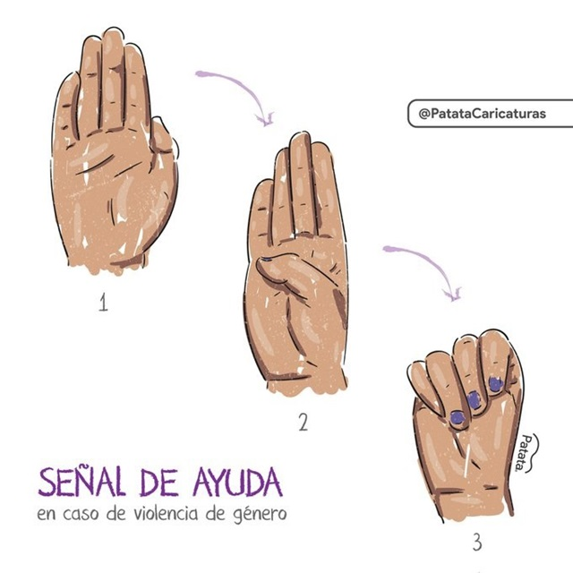

Medidas Preventivas
Prevención desde la ESI:
La ESI proporciona herramientas fundamentales para prevenir la trata de personas, enseñando a las personas desde la infancia a reconocer situaciones de riesgo y a ejercer sus derechos. Una educación integral ayuda a fortalecer la autoestima y a desarrollar relaciones basadas en el respeto, lo que reduce la vulnerabilidad ante situaciones de explotación.
Señales de Alerta:
La detección temprana es clave para prevenir la trata de personas. Esta sección describe las señales a las que se debe prestar atención, como el aislamiento de la víctima, el control por parte de terceros y la falta de libertad para tomar decisiones.
Recursos de Apoyo y Asistencia
Líneas de Ayuda:
Aquí se encuentra una lista de números telefónicos y contactos de emergencia donde se pueden denunciar situaciones sospechosas o pedir ayuda en América Latina. La comunicación rápida y anónima es vital para quienes están en riesgo o conocen posibles víctimas:
| País | Número de Teléfono | Descripción |
|---|---|---|
| Argentina | 145 | Atención gratuita las 24 horas para denunciar casos de trata de personas. |
| Bolivia | 800 10 0030 | Línea nacional gratuita de atención a víctimas de trata y tráfico de personas. |
| Brasil | 100 | Disque 100, línea para denuncias de violaciones a derechos humanos, incluida la trata. |
| Chile | 600 400 0101 | Línea de denuncia y asistencia para casos de trata de personas. |
| Colombia | 01 8000 52 2020 | Teléfono de atención gratuita para denuncias y apoyo a víctimas de trata de personas. |
| Costa Rica | 911 | Línea de emergencia para denunciar casos de trata de personas y explotación. |
| Cuba | 106 | Línea de emergencia para reportar casos de trata y otros delitos. |
| Ecuador | 1800 2627 27 | Línea gratuita para denuncias de trata y protección de víctimas. |
| El Salvador | 911 | Línea de emergencia para denuncias de trata de personas y abuso. |
| Guatemala | 110 | Línea nacional para la atención de denuncias y casos de trata de personas. |
| Honduras | 911 | Línea de emergencia para reportar casos de trata y otros crímenes. |
| México | 01 800 5533 000 | Línea nacional de apoyo contra la trata y explotación de personas. |
| Nicaragua | 133 | Línea de emergencia para denuncias de trata y protección de víctimas. |
| Panamá | 104 | Línea de emergencia y denuncia de casos de trata y otros delitos. |
| Paraguay | 137 | Línea gratuita para denuncias de trata y apoyo a víctimas de explotación. |
| Perú | 1818 | Atención nacional contra la trata de personas, disponible las 24 horas. |
| República Dominicana | 809 200 7393 | Línea de asistencia para víctimas de trata de personas. |
| Uruguay | 0800 5050 | Denuncias y orientación en casos de trata y tráfico de personas. |
| Venezuela | 0800 7676 728 | Línea nacional para reportar y recibir apoyo en casos de trata de personas. |
Organizaciones de Ayuda
- Red Nacional de Ayuda a Víctimas de Trata
- Organización Internacional para las Migraciones (OIM)
- Organización de las Naciones Unidas (ONU)
Volver al inicio